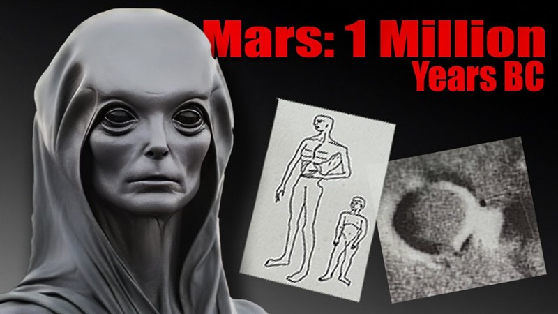

The CIA Hired Psychics To Find Aliens on Mars - PROJECT:STARGATE (Documentary 3 of 3)
Part 3 revisits the ancient Mars remote-viewing session through Joseph McMoneagle’s interview. Read the documentary’s account alongside the declassified session record and its evidentiary limits.

On this page
Summary
Third part and closing of the trilogy. The almost complete focus is Mars 1,000,000 BC, probably the most famous and most extreme case of Stargate folklore. The episode combines an extensive interview with Joseph McMoneagle, context about Monroe Institute, reinterpretation of the Martian session, expansion towards UFOs / consciousness / interdimensionality, final host practice and almost initiatory closing. As a narrative piece it is the most powerful; As a piece of evidence it is the most fragile.
What does it actually contain?
- extensive interview with McMoneagle about how the session happened
Mars Exploration, May 22nd 1984 - explanation of why I was in
Monroe Instituteand its relationship with out-of-body experiences - dramatized rereading of the Martian target and coordinates
- interpretation about pyramids, tall humanoids, storms and migration
- McMoneagle's claim that he then contrasted parts with
JPLmaterial - a long drift towards local/interdimensional UFOs and personal sighting experience in the Bahamas
- final remote viewing session of the host with simple targets as experiential closure
Why it matters within X Files
- The documentary adapts CIA Mars Exploration 1984 into a story about ancient Mars
- links
Monroe Institute, out-of-body experiences, ancient Mars and ufology in a single narrative - shows the exact point where the Stargate package stops being just intelligence history and enters speculative cosmology
- serves to differentiate between
authentic primary documentandlater interpretive / audiovisual layer
Episode structure
1) From skepticism to partial admission
The host opens by saying that, after seeing McMoneagle and speaking with Ed May, he finds it difficult to remain purely skeptical. This change in tone is the door to enter the Mars case with a favorable predisposition.
Core sentence:
I'm more than ever convinced that this phenomenon is real or at the very least that it deserves further research
2) Monroe Institute as operational context
McMoneagle explains that he was in Monroe because the DoD wanted him to learn how to control out-of-body experiences following a near-death experience. The documentary uses this to expand the framework: no longer just remote viewing, but another family of consciousness phenomena.
This is important because:
- move history from
inteligenciatoconciencia aplicada - raises pack rarity
- legitimizes the Martian target occurring in a non-standard context
3) The full story of Mars 1,000,000 BC
McMoneagle recounts how he was awakened, received coordinates and worked on a target that he assumed was terrestrial until finally opening the envelope. The episode dramatizes that process and crosses the story with visuals of Mars, structures and ruins.
Cores of the story:
- pyramids
- canyons / smooth walls / megalithic structures
- tall and thin people
- storm shelters
- an ancient civilization in collapse
- migration to another place
4) Reinterpretation and expansion of the case
The documentary does not limit itself to recounting the session: it expands it. It hints at a relationship with Martian anomalies, possible human or prehuman origin, strange technologies and continuity with UFO imaginaries.
There is the biggest speculative leap of the entire series.
5) UFO experience de McMoneagle
The episode adds a sighting/radiation account in the Bahamas. Its function is not to prove anything, but to reinforce the image of McMoneagle as a witness to anomalous phenomena beyond remote viewing.
6) Remote viewing of the host and shutdown
The final part shows the documentary filmmaker's sessions with simple targets. This doesn't add much to the Mars case, but it does close the emotional arc: from skepticism to there is something here.
Characters and functions
Joseph McMoneagle: total episode axisRobert Monroe / Monroe Institute: context for the crossover between VR and out-of-body work- documentary host: channels the transition from doubt to openness
Nelson Dellis: viewer reaction mirror
Dialogue / core claims
Selected passages from the documentary transcript. For the declassified session record, see CIA Mars Exploration 1984.
Host Tone Change
I'm more than ever convinced that this phenomenon is real or at the very least that it deserves further researchthat's a big pill to swallow for someone who spent most of their life being skeptical of psychics
Monroe Context
I had spontaneous out of bodies after my near-deaththe military ... decided that I should learn to control themthey made a deal with him(Robert Monroe)
Target revelation moment
it said Mars 1 Million BCI hate these targets ... like UFO targetshow am I going to know whether I got something valid or invented it
extreme interpretation
what I think martians are is uswe're descendants of the original inhabitants of Mars
UFO / anomalous experience
- story of intense light in the Bahamas, possible radiation and memory gap of its companion
- derivation towards hypothesis
local/interdimensional
What does this episode really contribute?
- shows how insiders and disseminators reinterpret the Mars document decades later
- connects
Monroe Instituteto Stargate history in a way that often remains fragmented - helps understand why the Mars case became so central to online paranormal culture
- leaves useful citations and framing to contrast with the primary note CIA Mars Exploration 1984
What it doesn't prove
- It does not validate that the session describes real history of Mars
- does not convert McMoneagle interview into scientific evidence
- does not prove that out-of-body experiences are operationally superior to VR
- does not test UFO/interdimensional block
Critical reading
The most solid
- McMoneagle's testimonial value about the context of the session
- explicit connection between Monroe, DoD and the Mars episode
- usefulness in tracing how the case was culturally reinterpreted
The weakest
- visual and narrative layer that amplifies much more than it demonstrates
- sliding from document and session to total cosmology
- inclusion of the UFO story as atmospheric reinforcement, not as related evidence
- final host sessions with primarily experiential value
Useful interpretation
The documentary offers a later interpretation of the Mars session. The original dialogue is available in CIA Mars Exploration 1984; this episode shows how that piece was absorbed into a much larger tale about consciousness, ancient civilizations, and anomalies.
Connections to other dossiers
- CIA Mars Exploration 1984 contains the entire central document and dialog
- Stargate documentary trilogy index places it as a speculative closing of the series
- How The CIA Spent Millions On Psychic Spies - PROJECT: STARGATE (Documentary 2 of 3) prepares the institutional ground before the Martian jump
- GONDOLA WISH preserves the bureaucratic origin that is already far behind here
Source
- video: Watch on YouTube
- Archive transcript
how-the-cia-spent-millions-on-psychic-spies-project-stargate-documentary-3-transcript.txt
Related
Research map Archive home Stargate documentary trilogy index CIA Mars Exploration 1984 How The CIA Spent Millions On Psychic Spies - PROJECT: STARGATE (Documentary 1 of 3) The CIA Hired Psychics To Find Aliens on Mars - PROJECT:STARGATE (Documentary 3 of 3)